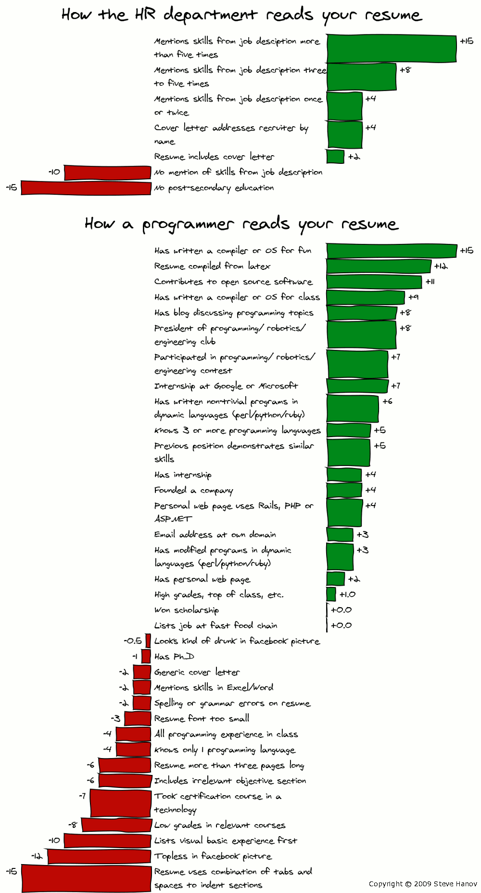

Hello World
CodeTengu Weekly 碼天狗週刊
本期 curators：
- @vinta - I failed the Turing Test - 無法通過圖靈測試的程序員
- @saiday - Imnotyourson - 捷運飲食推廣委員會
- @tzangms - Oceanic / 人生海海 - 我愛金貞敏
 @vinta
@vinta
Avoiding SQL Antipatterns using Django (and Postgres)
如何在 Django 裡避免 SQL Antipatterns 這本書裡提到的那些常見錯誤。這本書不厚，如果你便秘的話，蹲個三次馬桶就可以讀完了。
Making Clean Python Code a Part of Your Build Process (And More!)
雖然 Python 這一類的動態語言沒辦法像 Java 那樣在編譯的時候就檢查出一些低級的錯誤，但是我們也不要自暴自棄，我們還有 flake8 和 pylint，這些工具除了可以作為 Continuous Integration 的一個環節之外，也可以和我們常用的編輯器整合，直接在介面上用鮮明的顏色標示出錯誤或不符合規範的寫法。
用 SublimeText 的人可以試試 SublimeLinter-flake8。
延伸閱讀：
Code Review Best Practices
這篇文章說的是你在做 code review 的時候到底應該 review 些什麼，可以從架構、設計、程式碼風格、測試等角度來看 committer 的程式碼。
至於要如何處理 code review 裡的「人」的部分，你可以看一下延伸閱讀的那篇短文，主要在說 code review 的雙方在討論問題時應該用什麼樣的態度或語句比較好，我覺得最重要的一點其實就是：多使用問句，而不是命令句。例如你其實不應該說「不要使用全域變數！你這個智障！」而是應該採用一種比較委婉的語氣：「你確定要在這裡使用全域變數？你是智障嗎？」。
延伸閱讀：

精益技术简历之道 —— 改善技术简历的 47 条原则
不管你現在有沒有在找工作，其實都應該每隔一段時間（例如半年）就更新一下你的履歷，回顧並總結這段時間裡工作上值得一提的事情。這篇文章就是在講身為一個 developer 應該怎麼寫一份能夠被其他 developer 認同的履歷，所以不要再用那些傳統的求職網站教你的爛方法寫履歷啦。
第一步就是不要用 .doc。
延伸閱讀：
 @saiday
@saiday
lookingstars/meituan
一個中國的魔人 lookingstars 開源的高仿美團團購 iOS app，這個 app 有大量的客製化 UI 組件、Web View，作者全都用很高的完成度複製了出來，我在截圖中還看到作者似乎連啟動頁的廣告都霸氣的複製了。
會稱之為魔人就表示這樣的事情魔人絕對不會只幹一次，這個作者還開源了百度傳課 iOS、土豆視頻 iOS、遨遊哈哈 iOS。
PS. View 的部分作者都採用 code 生成，沒有 xib 及 storyboard，沒有採用 AutoLayout。
mackuba/SafariAutoLoginTest
Introduction Safari View Controller WWDC session
iOS 9 新增了 Safari View Controller，可以透過它拿到 Safari cookies。這也表示如果使用者已經在 Safari 瀏覽器登入過你的服務，當使用者安裝 native app 時如果你的 Safari cookie 存有足夠的資訊你可以將使用者自動登入，這是很好的使用者體驗。
這個 GitHub concept repo 簡單展示了使用 SafariViewController 來實現的自動登入。
PS. 就算無法自動登入，Safari View Controller 也有機會存取 iCloud Keychain 做帳號密碼 AutoFill，也是很不錯的體驗。
Match Me if you can: Swift Pattern Matching in Detail
Swift 強大的 Matching 機制詳細介紹，包含七個常用的 Matching Pattern (Wildcard, Identifier, Value-Binding, Tuple, Enumeration Case, Type-Casting, Expression)，如果你不想看內文，這裡有整理好的 pattern implementation。
後段也介紹了在 Swift 中 switch 進階的用法以及 case keyword 與其它 statement (if, for, guard) 的組合技法。
延伸閱讀：
- Custom pattern matching in Swift 也就是
~=的 overloading 啦
Review Monitor - App reviews delivered to Slack and your inbox
iOS App Store review monitor，簡單的設定好之後，你的 App 收到新評論的時候可以發送內容到 Slack 或 Inbox，每則評論也會產生一個還不錯看的靜態頁面可以供宣傳使用。
似乎過一陣子就會支援 Google Play，目前 Android 有另一個選擇 Android Review Manager
Speed up your app (Droidcon NYC 2015)
這是一份介紹 Android App 效能優化的簡報，包含了內建的效能分析工具 Systrace, TraceView, Allocation Tracer, GPU rendering, GPU overdraw, Hierarchy View 以及 square 出的 LeakCanary Memory leaks 偵測工具。
LeakCanary 的概念跟使用說明可以看 Square 自己寫的這篇 LeakCanary: Detect all memory leaks!
PS. 這篇簡報搭配的影片還沒出來，出來的時候會分享到 CodeTengu Facebook 粉絲團跟 Twitter 帳號。
 @tzangms
@tzangms
"无所不能" 的产品经理
身邊有很多工程師們都不知道 PM 到底實際用處在哪、做些什麽事, 其實就連我也是這一陣子才比較清楚 PM 工作的整個樣貌。 加上前一陣子看了人人都是产品经理這本書, 所以覺得有興趣的人可以從這篇文章中瞭解一下 PM 的工作。
總之呢, PM 就得是問題分析跟問題解決的專家就是了!
The 22 books to read before you quit your job
國外有許多書跟文章都在說如何開展自己想要的生活, 特別是開創自己的事業, 但是身為一個開發人員大多在提升自身的技術能力, 其實很容易缺少像是財務、經營、行銷等等技能, 所以時常會聽到很多人開公司時常敗在財務, 或是不知道怎麼做好行銷而敗下陣來。
這篇文章裡面列了在辭職前需要讀的 22 本書, 沒想到我已經讀過了 10 本, 所以覺得跟我思路滿像的, 畢竟之前也都是在為了辭職而努力 (笑)。
讀完 10 本書後的感想呢, 我是覺得有空可以讀一下, 多累積一下非技術的思維, 會讓思考更靈活。
用 Hazel 來簡化數位生活
我覺得用 Mac 的人真的都應該買 Hazel 這個工具的, 不管如何我還是想跟大家分享這一篇文章, 把事情自動化, 這樣才能空出更多的時間, 把時間花在重要的事情上。
Otaku is the New Sexy
Monty Python and the Holy Grail 聖杯傳奇
雖然 Python 的 LOGO 是蟒蛇，但是根據作者 Guido van Rossum 的說法，這個名字其實是取自一個七零年代的英國喜劇團體 Monty Python（他們甚至被稱為喜劇界的 The Beatles）。知道這個典故的人不少，但是真的看過 Monty Python 的電視劇或電影的人就不多了。
今天就來跟大家介紹一部他們最有名的電影 Monty Python and the Holy Grail。電影說的是傻乎乎的亞瑟王和他的一群低能的圓桌武士尋找聖杯的故事，但是無論是台詞、角色設定或表現手法，就算是現在來看都非常前衛，加上他們慣有的對政治和宗教的惡趣味詭辯，喜歡那種惡毒的英式笑話的人真的不應該錯過。而且今年的「高雄電影節」有放映這部片！
PS. 以前跟朋友聊到為什麼會用 Python 這個語言，大家講完各自的理由之後，我才發現好像只有我是因為也很喜歡 Monty Python 所以才決定學 Python 的，不然當年讀大學的時候最熱門的程式語言其實是 Ruby，可惜現在 Ruby 已經不潮了。
由 @vinta 分享